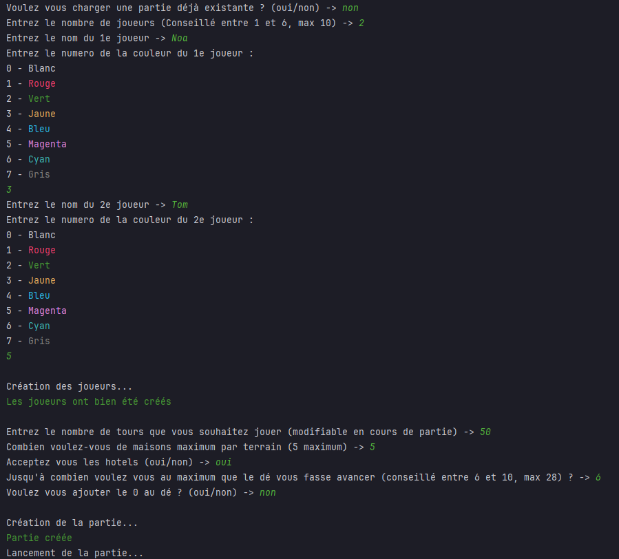
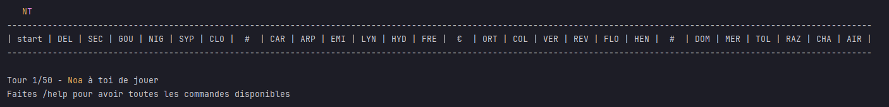
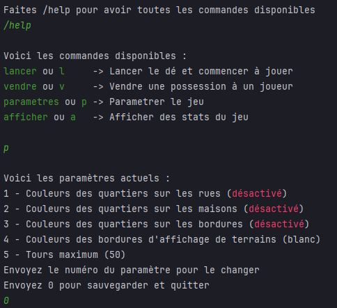
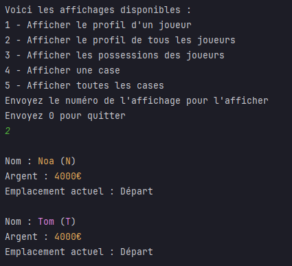
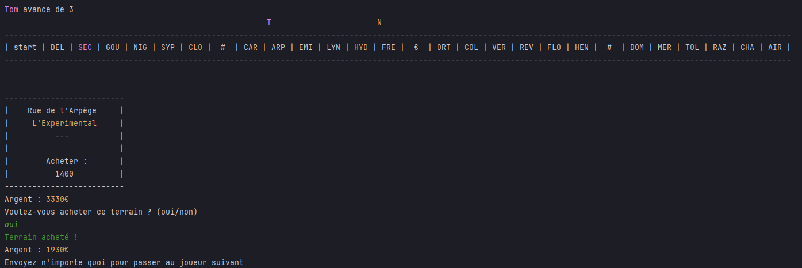
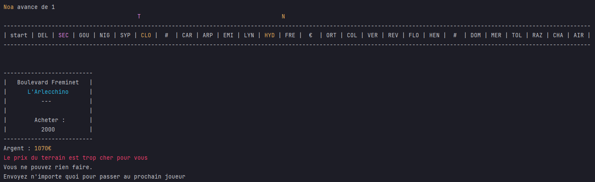
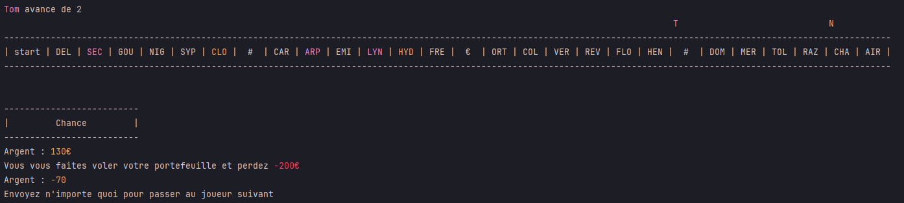
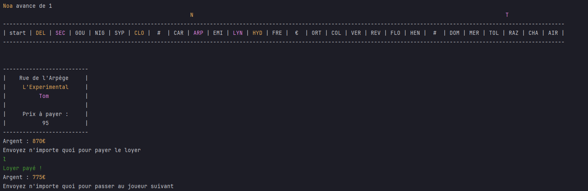

Mes Projets personnels
Monopoly mini
Technos : Java
Contexte et objectif : Jouer à une partie de monopoly en étant dans le cmd, sans utiliser d'interface
Tâches effectuées :
- Concevoir un plateau de jeu avec des --- et des |
- Concevoir des classes pour chaque case spéciale, avec ses effets distincts
- Gérer comment interragissent les joueurs avec le plateau et les cases différentes
- Modifier l'interface du plateau du jeu pour instaurer les joueurs et les différentes cases, et y ajouter des couleurs
- Créer des commandes pour que les joueurs puissent interragir avec le jeu et jouer
- Permettre la création de la partie, en ajoutant des paramètres et modificateurs
- Créer un système de sauvegarde d'une partie via un fichier txt enregistré en local
Comment ça fonctionne :
Au lancement de la partie de nombreux paramètres sont proposés pour créer la partie et y ajouter différents modificateurs
Paramètres et Modificateurs
Le jeu présente ensuite le plateau, qui est affiché comme un tableau d'une seule ligne, avec dans chaque case les 3 premières lettres du nom de la rue, ou bien des caractères spéciaux pour les cases chances (#) et le parc (€). Les pions des joueurs sont spécifiés par la première lettre de leur pseudo, avec leur couleur prédéfinie. Les pions se trouvent au dessus de la case où ils sont
Plateau au début de la partie
Différentes commandes sont ensuite disponnible au joueur comme "lancer" ou "l" pour lancer le dé et commencer à jouer. Il peut aussi vendre une de ses possessions à un joueur, paramétrer la partie, ou même afficher des stats de la partie. Les paramètres vont ajouter aussi des modifications via les couleurs affichés sur le plateau du jeu, pour le rendre plus vivant.
Paramètres disponibles
Affichage des statistiques
Lorsque le joueur lance le dé, il déplace son pion et le jeu affiche la carte de la case où il apparait. S'il tombe sur une rue, il peut décider d'acheter la rue ou non. Si elle est déjà possédée, il paye automatiquement le joueur qui possède la maison. De plus, en possédant une case, celle-ci se colorise avec la couleur du joueur
Exemple d'achat d'une rue
Impossibilité d'acheter une rue car le solde est pas suffisemment élevé
Exemple d'une case Chance
Tomber sur la location de quelqu'un d'autre et devoir payer le loyer
